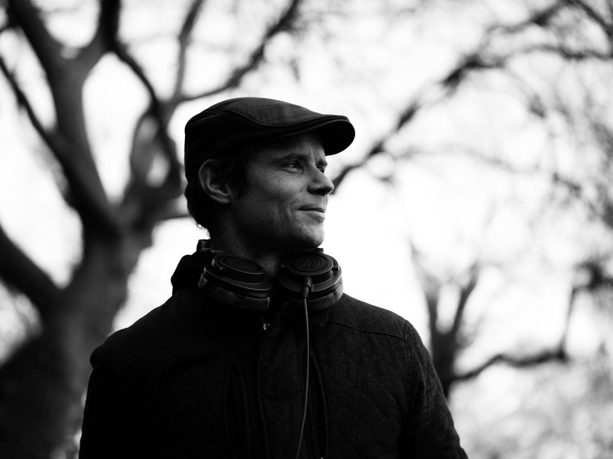

Contact information
Personal information
- Name: Paul Buetow
- Born in: Germany
- Currently living in: London, UK
- E-Mail: paul at buetow period org

My sites
foo.zone - My personal website and blog
foo.zone - My personal website and blog (Gemini)
codeberg.org/snonux - My personal Codeberg page
dtail.dev - DTail at Mimecast
github.com/mimecast/ioriot - I/O Riot at Mimecast (currently unmaintained)
irregular.ninja - My street photography site (warn: multiple MBs, it's photos after all)
Social Media
I am sharing articles that I found interesting regularly these social media channels:
My LinkedIn profile
twitter.com/snonux - My Twitter profile
t.me/snonux - My Telegram channel
Internet Relay Chat
I am on irc.german-elite.net in #talk, #coding, #linux (and maybe in others) as "rantanplan" or sometimes as "snonux".
Site mirrors
Check out all mirrors of this site (Gemini as well as HTTP+HTML)
That's all for now...
Go back to the main site